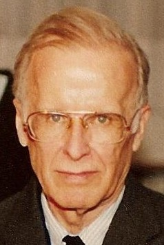

This article needs more citations. (September 2025) |
{kind=link}
John Backus | |
|---|---|
 Backus in 1989 | |
| Born | John Warner Backus December 3, 1924 Philadelphia, Pennsylvania, U.S. |
| Died | March 17, 2007 (aged 82) |
| Education | University of Virginia University of Pittsburgh Haverford College Columbia University (BS, MS) |
| Known for | Speedcoding FORTRAN ALGOL Backus–Naur form Function-level programming |
| Spouses | Marjorie Jamison
(m. 1947–1966)Barbara Una
(m. 1968; died 2004) |
| Children | 2 |
| Awards | National Medal of Science (1975) Turing Award (1977) Charles Stark Draper Prize (1993) |
| Scientific career | |
| Fields | Computer science |
| Institutions | IBM |
{kind=link}
John Warner Backus (December 3, 1924 – March 17, 2007) was an American computer scientist. He led the team that invented and implemented FORTRAN, the first widely used high-level programming language, and was the inventor of the Backus–Naur form (BNF), a widely used notation to define syntaxes of formal languages. He also contributed to the design of ALGOL, and later researched the function-level programming paradigm, presenting his findings in his influential 1977 Turing Award lecture "Can Programming Be Liberated from the von Neumann Style?"[1]
The IEEE awarded Backus the W. W. McDowell Award in 1967 for the development of FORTRAN.[2] He received the National Medal of Science in 1975[3] and the 1977 ACM Turing Award "for profound, influential, and lasting contributions to the design of practical high-level programming systems, notably through his work on FORTRAN, and for publication of formal procedures for the specification of programming languages".[4]
John Backus retired in 1991. He died at his home in Ashland, Oregon on March 17, 2007.[5]
Early life
Backus was born in Philadelphia and grew up in nearby Wilmington, Delaware.[6] He studied at The Hill School in Pottstown, Pennsylvania, but he was apparently not a diligent student.[5] He entered college at the University of Virginia to study chemistry, but struggled with his classes there, and he was expelled after less than a year for poor attendance.[7] He was subsequently conscripted into the U.S. Army during World War II,[5] and eventually came to hold the rank of corporal, being put in command of an anti-aircraft battery stationed at Fort Stewart, Georgia.[7]
After receiving high scores on a military aptitude test, the Army sent him to study engineering at the University of Pittsburgh.[7] He later transferred to a pre-medical program at Haverford College.[8] During an internship at a hospital, he was diagnosed with a cranial bone tumor, which was successfully removed, and a plate was installed in his head. He then moved to the Flower and Fifth Avenue Medical School for medical school, but found it uninteresting and dropped out after nine months.[7] He soon underwent a second operation to replace the metal plate in his head with one of his own design,[9] and received an honorable medical discharge from the U.S. Army in 1946.[7]
Fortran
| This article is part of a series on the Fortran programming language |
After moving to New York City he trained initially as a radio technician and became interested in mathematics. He graduated from Columbia University with a bachelor's degree in 1949 and a master's degree in 1950, both in mathematics,[7][10] and joined IBM in 1950. During his first three years, he worked on the Selective Sequence Electronic Calculator (SSEC); his first major project was to write a program to calculate positions of the Moon. In 1953, Backus developed the language Speedcoding, the first high-level language created for an IBM computer, to aid in software development for the IBM 701 computer.[11]
Programming was very difficult at this time, and in 1954 Backus assembled a team to define and develop Fortran for the IBM 704 computer. Fortran was the first high-level programming language to be put to broad use. This widely used language made computers practical and accessible machines for scientists and others without requiring them to have deep knowledge of the machinery.[12]
Backus–Naur form
Backus served on the international committees that developed ALGOL 58 and the very influential ALGOL 60,[13] which quickly became the de facto worldwide standard for publishing algorithms. Backus developed the Backus–Naur form (BNF), published in the UNESCO report on ALGOL 58. It was a formal notation able to describe any context-free programming language, and was important in the development of compilers. A few deviations from this approach were tried (notably in Lisp and APL), but by the 1970s, Backus–Naur context-free specifications for computer languages had become quite standard, following the development of automated compiler generators such as yacc.
This contribution helped Backus win the ACM Turing Award in 1977.
Function-level programming
Backus later worked on a function-level programming language known as FP, which he described in his Turing Award lecture "Can Programming be Liberated from the von Neumann Style?".[1] Sometimes viewed as Backus's apology for creating Fortran, this paper did less to garner interest in the FP language than to spark research into functional programming in general. When Backus publicized the function-level style of programming, his message was mostly misunderstood[14] as being the same as traditional functional programming style languages.
FP was strongly inspired by Kenneth E. Iverson's APL,[15] even using a non-standard character set.[16] An FP interpreter was distributed with the 4.2BSD Unix operating system,[17] but there were relatively few implementations of the language, most of which were used for educational purposes.[18]
Backus spent the latter part of his career developing FL (from "Function Level"), a successor to FP. FL was an internal IBM research project, and development of the language stopped when the project was finished. Only a few papers documenting it remain, and the source code of the compiler described in them was not made public. FL was at odds with functional programming languages being developed in the 1980s, most of which were based on the lambda calculus and static typing systems instead of, as in APL, the concatenation of primitive operations. Many of the language's ideas have now been implemented in versions of the J programming language, Iverson's successor to APL.
Awards and honors
- Named an IBM Fellow (1963)[19]
- W. W. McDowell Award (1967)[2]
- National Medal of Science (1975)[3]
- Turing Award (1977)[4]
- Fellow of the American Academy of Arts and Sciences (1985)[20]
- Doctor honoris causa Université Henri-Poincaré (1989)[21]
- Draper Prize (1993)[22]
- Computer History Museum Fellow Award "for his development of FORTRAN, contributions to computer systems theory and software project management." (1997)[23]
- Asteroid 6830 Johnbackus named in his honor (June 1, 2007) †
See also
References
- ^ a b Backus, John (August 1978). "Can programming be liberated from the von Neumann style?: a functional style and its algebra of programs". Communications of the ACM. 21 (8). doi:10.1145/359576.359579. S2CID 16367522.
- ^ a b "W. Wallace McDowell Award". Archived from the original on September 29, 2007. Retrieved April 15, 2008.
- ^ a b "The President's National Medal of Science: John Backus". National Science Foundation. Archived from the original on September 29, 2007. Retrieved March 21, 2007.
- ^ a b "John Backus - A.M. Turing Award Laureate". Association for Computing Machinery. Retrieved November 3, 2025.
- ^ a b c Lohr, Steve (March 20, 2007). "John W. Backus, 82, Fortran Developer, Dies". The New York Times. Retrieved March 21, 2007.
- ^ "John Backus". The History of Computing Project. Archived from the original on April 27, 2016. Retrieved April 28, 2016.
- ^ a b c d e f "John Backus - A.M. Turing Award Laureate". ACM A.M. Turing Award. Archived from the original on January 19, 2018. Retrieved May 4, 2018.
- ^ "Inventor of the Week Archive John Backus". Lemelson-MIT Program. February 2006. Archived from the original on October 26, 2011. Retrieved August 25, 2011.
- ^ Grady Booch (September 25, 2006). "Oral History of John Backus" (PDF). Retrieved August 17, 2009.
- ^ "John Backus". www.columbia.edu. Retrieved October 2, 2021.
- ^ Allen, F.E. (September 1981). "The History of Language Processor Technology in IBM". IBM Journal of Research and Development. 25 (5): 535–548. doi:10.1147/rd.255.0535.
- ^ "John Backus | Lemelson". lemelson.mit.edu. Retrieved February 7, 2023.
- ^ Knuth, Donald E. (December 1, 1964). "backus normal form vs. Backus Naur form". Communications of the ACM. 7 (12): 735–736. doi:10.1145/355588.365140. ISSN 0001-0782.
- ^ Hudak, Paul (1989). "Conception, Evolution, And Application Of Functional Programming Languages". ACM Computing Surveys, Vol. 21, No. 3
- ^ "Functional programming". dlab.epfl.ch. Retrieved July 14, 2026.
- ^ "Can Programming Be Liberated from the von Neumann Style? A Functional Style and Its Algebra of Programs". ACM Digital Library. doi:10.1145/359576.359579. Retrieved July 14, 2026.
- ^ Computer Science Division, Department of Electrical Engineering and Computer Science (July 1984). Unix Programmer's Manual: Supplementary Documents.
- ^ "FAQ for comp.lang.functional". people.cs.nott.ac.uk. Retrieved July 14, 2026.
- ^ "John Backus". IBM Archives. January 23, 2003. Archived from the original on August 26, 2011. Retrieved March 21, 2007.
- ^ "Book of Members, 1780–2010: Chapter B" (PDF). American Academy of Arts and Sciences. Archived (PDF) from the original on July 25, 2011. Retrieved April 28, 2011.
- ^ "John Backus". Archived from the original on May 14, 2008. Retrieved April 15, 2008.
- ^ "Recipients of the Charles Stark Draper Prize". Archived from the original on March 2, 2010. Retrieved March 26, 2007.
- ^ "Fellow Awards 1997 Recipient John Backus". Archived from the original on July 9, 2010. Retrieved April 15, 2008.
External links
- John W. Backus Papers, Manuscript Division, Library of Congress, Washington, D.C.
- Biography at School of Mathematics and Statistics University of St Andrews, Scotland
- Biography at The History of Computing Project
- The FL project (Postscript file)
- "Obituary for John W. Backus". New York Times. March 20, 2007.
- IBM Archives
- About BNF
- Hall of Fellows Computer History Museum
- Campbell-Kelly, Martin (April 2007). "Obituary: John Backus (1924–2007):Inventor of science's most widespread programming language, Fortran". Nature. 446 (7139): 998. doi:10.1038/446998a. PMID 17460658. S2CID 4325337.
- Memorial delivered at the 2007 Conference on Programming Language Design and Implementation